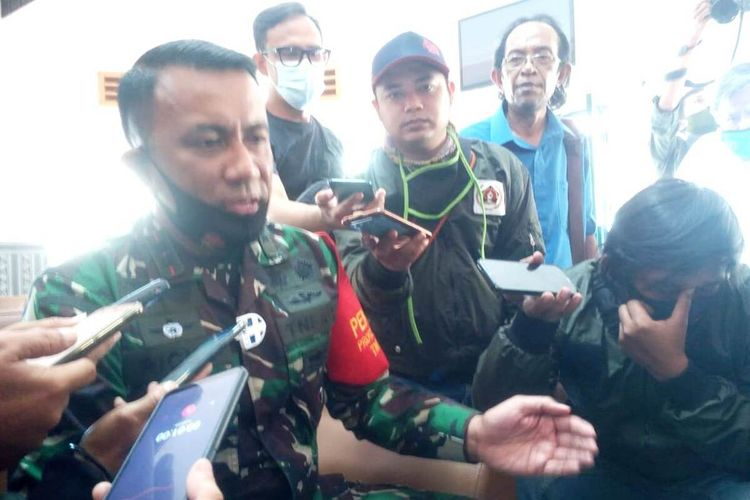

Jakarta PSBB, Cianjur Dirikan Posko di 3 Titik Perbatasan
BeritaKita.com-
Bagikan:

CIANJUR, KOMPAS.com – Akses masuk ke Kabupaten Cianjur, Jawa Barat, terus diperketat seiring dengan pemberlakuan pembatasan sosial berskala besar (PSBB) DKI Jakarta.
PSBB jilid dua atau PSBB pengetatan di ibu kota itu sendiri berlaku selama dua pekan, mulai Senin (14/9/2020) hingga 27 September 2020.
Komandan Kodim 0608/Cianjur Letkol Kav Ricky Arinuryadi dalam keterangannya mengatakan, tim gugus tugas percepatan penanganan Covid-19 Cianjur telah mendirikan posko terpadu di sejumlah wilayah perbatasan.
“Ada tiga titik yang menjadi prioritas, yakni perbatasan Bandung di daerah Haurwangi, perbatasan Gekbrong, dan perbatasan di kawasan Puncak,” kata Ricky kepada Kompas.com di lingkungan makodim, Kamis (17/9/2020).
Disebutkan, jajarannya bertekad untuk melakukan pengawasan yang lebih ketat melalui pemeriksaan kendaraan yang masuk ke Cianjur.
“Tujuannya tentu untuk membatasi pergerakan orang yang keluar-masuk Cianjur yang tidak berkepentingan,” ujar dia.
Merujuk pada imbauan Gubernur Jawa Barat dan Pangdam III Siliwangi, Ricky pun mengimbau warga Jakarta agar membatasi berkunjung ke kawasan Puncak.
“Kita tentu tidak mau Cianjur yang sudah kondusif ini meningkat angkanya (kasus Covid-19) karena masuknya orang dari luar. Karenanya, pembatasan arus dari Jakarta terutama yang dari wilayah Bogor hari demi hari terus kita lakukan,” ucapnya.
Lebih lanjut dikatakan, pihaknya melalui jajaran di tingkat koramil telah menginstruksikan para babinsa untuk meningkatkan pengawasan terhadap warga yang keluar masuk di lingkungan tingkat desa hingga RT.
“Selain itu, para babinsa juga terus mengajak masyarakat untuk taat pada protokol kesehatan. Memakai masker, rajin mencuci tangan dan senantiasa menjaga jarak aman. Terus kita persuasif akan hal ini,” kata Ricky.
Diberitakan sebelumnya, warga Cianjur yang selama ini bekerja di Jakarta diprediksi akan memilih pulang kampung selama diberlakukannya PSBB jilid dua atau PSBB pengetatan DKI Jakarta.
Terkait hal itu, plt Bupati Cianjur Herman Suherman meminta warga Cianjur yang tengah bekerja di Jakarta untuk tidak memaksakan diri pulang ke kampung halaman.
Herman pun telah menginstruksikan perangkatnya hingga ke tingkat RT untuk mengawasi aktivitas keluar-masuk warga di lingkungan masing-masing.
Comment: